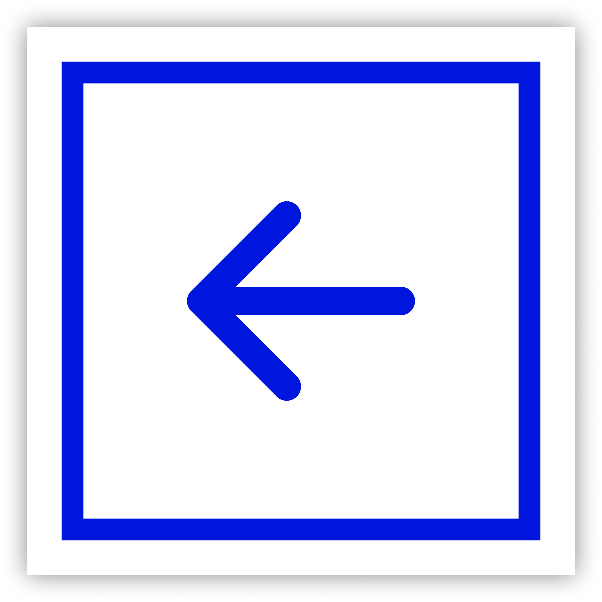

Background
A portfolio website is designed to showcase the work, skills and experiences of someone or a company (in this context, it would be me). It serves as a visual representation of my abilities, expertise and creativity that people can see through the internet.
I need a portfolio website to that can show off my skills, projects, and myself, while looking professional yet unique that will hopefully be accepted by company recruiters and my assessors. So my research question is:
“How do I create a personal website that I personally liked to effectively showcase my work, skills, and myself while also having a seamless and engaging user experience?”

Literature Study
I first need to find contextual information, guidance and best practices. This time I will specifically be researching design principles.
Based on Interaction Design Foundation, I found that these principles are related and crucial in context of creating this portfolio website.

Set information in a logical, natural order.
Ensure users can easily undo/redo actions.
Maintain consistent standards so users know what to do next without learning new toolsets.
Don’t make users remember information – keep options, etc., visible.
Design with aesthetics and minimalism in mind – don’t clutter with unnecessary items.
When designing my wireframe, prototype, and eventually code it to make this website, I will keep these principles in mind.
Benchmark Creation / Competitive analysis
I also need to analyse other portfolio websites that is well designed taken from reliable sites like Dribbble and Awwwards.
I will take the pros of both websites and incorporate them to my website.
Trend analysis
To make my website modern and have a more immersive experience, I need to research on design trends.
Here are the top trends I concluded were helpful to building this website.

Moodboard
Now that I know the laws I need to follow, what others do that make them great, and modern trends, I need to add my own my personal touch. This is why I devised a moodboard.


Flowchart
After knowing all the research above, it's time to illustrate the structure of my website. I modeled it like Bruno’s layout because I want to ensure simplicity to users.

Wireframe
Now that I know the flow of my website, I will give more details and visualise the basic layout of my website. This is the wireframe I came up with.
Prototyping
Combining all the results I got, it's time to make a prototype in Figma. This is my final proposed design (you can compare it to the main page :D)

Usability testing
I did a usability testing by literally showing this portfolio website to 5 random people. I asked them to do some tests, and ask them some questions.
Here are the results.
I tasked them to find the contents of my FlyGaruda project. The average duration was 3.2s, with 100% completion rate.
I tasked them to find my skills section. Average duration taken was 1.8s and 100% completion rate.
I tasked them to find the contact me footbar. Average duration taken was 2.3s and 100% completion rate.
After this, I asked them some questions. These questions help me if my research and design is able to answer the research question.
"Do you feel like my design is trendy or not?" 4 people said it's trendy, 1 said it's alright.
"Does my website look trendy to you?" Everyone said that it looks unique.
"Are the information and layout of the website clear to you?" 4 out of 5 stated that the layout and information are very clear. One said it's just clear enough.
I then asked some feedbacks to the testers if they have any.
One tester commented that at first they were confused with my website; they thought that their laptop actually crashed and refreshed the website 3 times because of my BSOD parody. But then they realised that it’s just a joke, after seeing the ;) emoji.
They liked how I can combine neobrutalism and the minimalism theme on the projects section.
Conclusion
Based on the research, design, and testing above, I was able to create a portfolio website that is unique & to my liking, while effectively showing my work, skills, and myself, while having a great user experience. The testing has produced positive results and therefore, I have answered my research question. Thank you for reading!